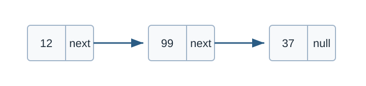

Linked List
คำอธิบาย
Linked list คือโครงสร้างข้อมูลเชิงเส้นที่ข้อมูลแต่ละชุด (node) ไม่จำเป็นต้องอยู่ติดกันในหน่วยความจำ แต่ละ node เก็บข้อมูลและ pointer ชี้ไปยัง node ถัดไป

Singly linked list. Original diagram for this guide.
จากรูป node แรกเก็บ 12 และชี้ไปที่ node ที่เก็บ 99 ซึ่งชี้ต่อไปที่ 37 และ node
สุดท้ายชี้ไปที่ nullptr (ไม่มี node ถัดไป) เราจำแค่ตำแหน่งของ node แรก
(head) ก็เดินไปถึงทุก node ได้
Array กับ Linked list
| Operation | Array / vector | Linked list |
|---|---|---|
| เข้าถึงตัวที่ i | O(1) | O(n) ต้องเดินจาก head |
| แทรก/ลบ ตรงกลาง (เมื่อรู้ตำแหน่งแล้ว) | O(n) ต้องเลื่อนตัวอื่น | O(1) แก้ pointer |
| แทรก/ลบ ท้าย | O(1) เฉลี่ย | O(1) ถ้าเก็บ tail |
| หน่วยความจำ | ต่อเนื่อง, cache ดี | กระจาย, ใช้ pointer เพิ่ม |
Linked list จึงเหมาะกับโจทย์ที่ต้อง แทรกหรือลบกลางลำดับบ่อย ๆ โดยรู้ตำแหน่งอยู่แล้ว
Singly linked list ด้วย pointer
struct Node {
int data;
Node* next;
};
int main() {
Node* third = new Node{37, nullptr};
Node* second = new Node{99, third};
Node* head = new Node{12, second};
for (Node* cur = head; cur != nullptr; cur = cur->next) {
cout << cur->data << ' '; // 12 99 37
}
}แทรก (insert)
แทรก node ใหม่ หลัง node p: ให้ node
ใหม่ชี้ไปที่ตัวที่ p เคยชี้ แล้วให้ p ชี้มาที่ node ใหม่
(ลำดับสำคัญ ถ้าสลับกันจะทำส่วนท้ายหาย)
void insertAfter(Node* p, int x) {
Node* node = new Node{x, nullptr};
node->next = p->next; // 1. node ใหม่ชี้ไปที่ตัวถัดจาก p
p->next = node; // 2. p ชี้มาที่ node ใหม่
}ลบ (delete)
ลบ node ที่อยู่ หลัง p: ให้ p
ชี้ข้ามไปยังตัวถัดไปของตัวที่ถูกลบ
void eraseAfter(Node* p) {
Node* gone = p->next;
if (gone == nullptr) return;
p->next = gone->next;
delete gone;
}ทั้งสองแบบใช้เวลา O(1) เพราะแก้ pointer แค่ไม่กี่ตัว
Doubly linked list
แต่ละ node เก็บ pointer สองตัว คือ prev ชี้ไปตัวก่อนหน้า และ
next ชี้ไปตัวถัดไป ทำให้เดินได้ทั้งสองทิศ และลบ node ใดก็ได้ใน O(1) เมื่อมี pointer ไปที่ node นั้น
(ไม่ต้องรู้ตัวก่อนหน้า)
struct DNode {
int data;
DNode* prev;
DNode* next;
};
void erase(DNode* x) { // สมมติว่า x ไม่ใช่ตัวแรกหรือตัวสุดท้าย
x->prev->next = x->next;
x->next->prev = x->prev;
delete x;
}Linked list ด้วย array (นิยมในการแข่งขัน)
ในการแข่งขันมักเก็บ linked list ด้วย array ของ index แทน pointer
เขียนง่ายกว่า ไม่ต้อง new/delete และเร็วกว่า ให้
nxt[i] และ prv[i] เป็นตำแหน่งถัดไปและก่อนหน้าของคนที่
i
ตัวอย่าง: คน n คนยืนเป็นวงกลม หมายเลข 1..n เริ่มที่คนที่ 1 แล้วข้ามไปหนึ่งคนและนำคนถัดไปออกซ้ำไปเรื่อย ๆ (Josephus problem)
int n = 7;
vector<int> nxt(n + 1), prv(n + 1);
for (int i = 1; i <= n; i++) {
nxt[i] = i % n + 1; // คนถัดไป (วนกลับไปที่ 1)
prv[i] = (i + n - 2) % n + 1; // คนก่อนหน้า
}
int cur = 1;
for (int left = n; left > 0; left--) {
int out = nxt[cur]; // ข้าม cur แล้วนำคนถัดไปออก (เหลือคนเดียว nxt[cur] = cur)
cout << out << ' '; // 2 4 6 1 5 3 7
nxt[prv[out]] = nxt[out]; // ลบ out ออกจากวง ใน O(1)
prv[nxt[out]] = prv[out];
cur = nxt[out];
}ทั้งหมดใช้เวลา O(n) ถ้าใช้
vector::erase จะเป็น O\left( n^{2}
\right)
STL มี list<int> เป็น doubly linked list สำเร็จรูป
แต่ในการแข่งขันใช้ไม่บ่อยนัก เพราะ array หรือโครงสร้างข้อมูลอื่นมักเหมาะกว่า
ลองคิด
ถ้าในฟังก์ชัน
insertAfterสลับขั้นที่ 1 กับ 2 (ตั้งp->next = nodeก่อน) จะเกิดอะไรขึ้นทำไมการหาตัวที่ i ใน linked list จึงช้ากว่า array
เฉลย
ขั้นที่ 1 จะตั้ง
node->next = p->nextซึ่งตอนนั้นคือnodeเอง จึงเกิดวงวนชี้ตัวเอง และส่วนท้ายของ list ที่เคยต่อจากpหายไปnode ไม่อยู่ติดกันในหน่วยความจำ จึงคำนวณตำแหน่งตรง ๆ ไม่ได้ ต้องเดินตาม pointer ทีละตัว i ครั้ง
โจทย์ฝึกฝน (Practice Problems)
ลองทำโจทย์เหล่านี้จาก CSES Problem Set เพื่อฝึกใช้ทักษะจากบทนี้ โดยเริ่มจากโจทย์ที่ง่ายที่สุดก่อน
Josephus Problem I (array linked list)
Josephus Problem II (ต้องใช้โครงสร้างที่เร็วกว่า)
โจทย์เพิ่มเติม: CSES Problem Set และ programming.in.th